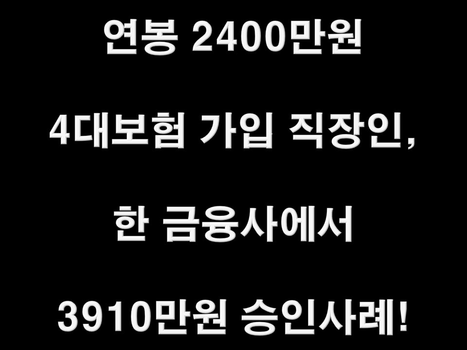
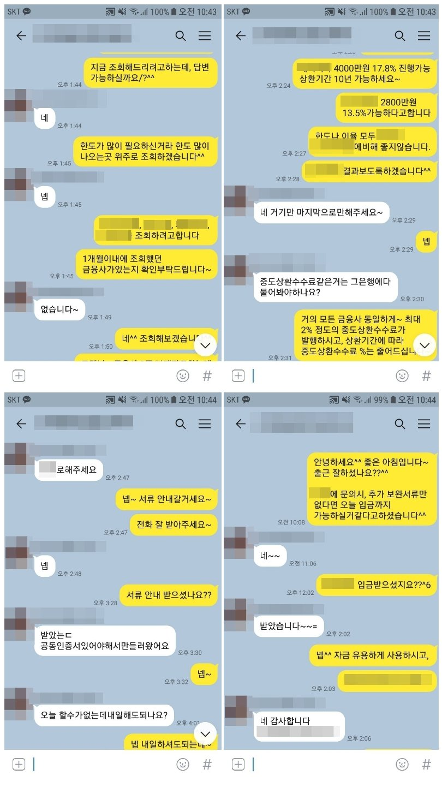

연봉 2400만원 4대보험 가입 직장인, 한 금융사에서 3910만원 승인사례!

안녕하세요^^ 뱅크앤론 상담사 유미광 과장입니다^^ 오늘은 제가 진행해드린 김** 고객님의 대출 사례를 소개
해 드리겠습니다. 김** 고객님께서는 현 직장에 1년 1개월째 근무중이시며, 연봉 2400만원의 4대 가입 직장인
이셨습니다. 대출은 신한은행 1450만원 1건을 이용중이셨습니다. 소득 대비 필요자금이 많으셔서 경험 많은
뱅크앤론으로 문의주셨다고하셨습니다. 이에 저는 한도가 잘나오는 금융사 위주로 조회해드린 결과, 한 금융사
에서 4000만원이 진행 가능하시다는 결과를 받으셨고, 진행중 90만원이 감액되셨지만, 필요하신 자금에 충분하
다고 하셨습니다. 이에 김** 고객님께서도 매우 만족하셨습니다. 자세한 사항은 아래 저와 김**고객님의 카톡대
화 내용을 참고하실 수 있습니다. 감사합니다^^
